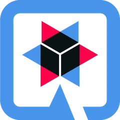
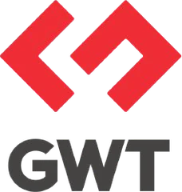
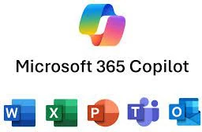
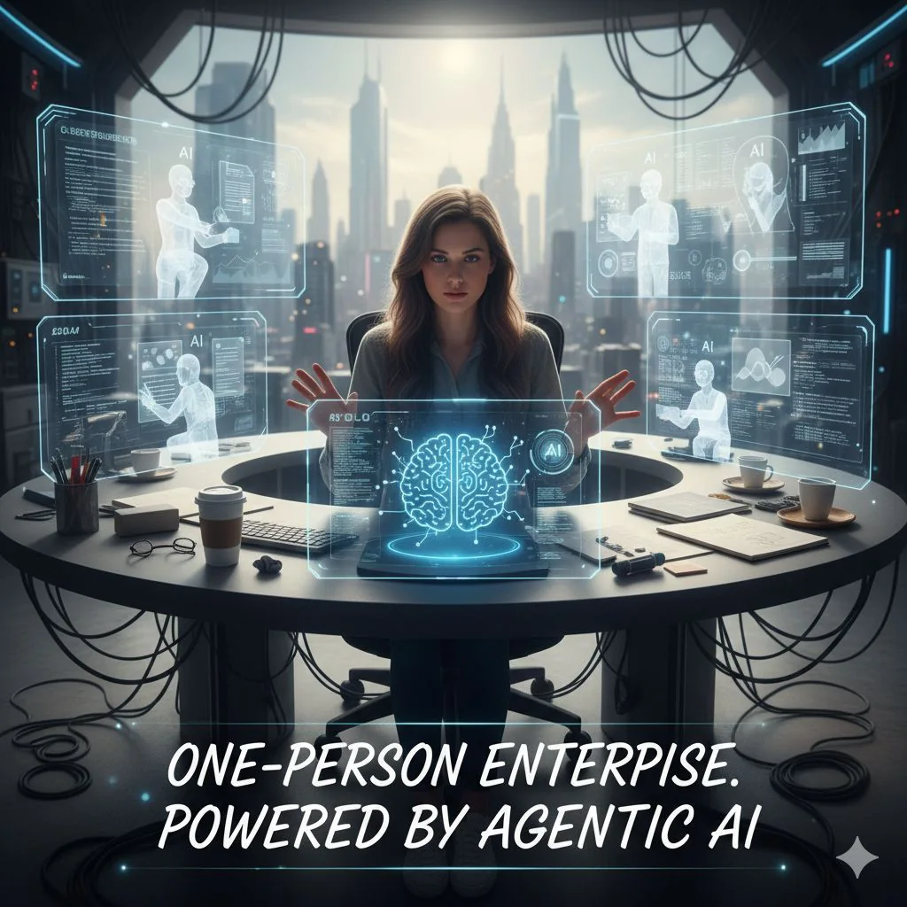
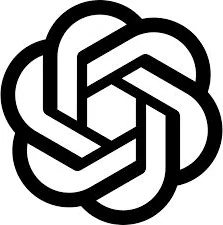
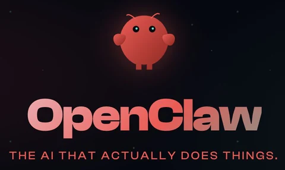
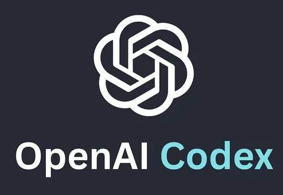
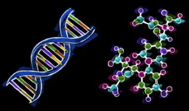

Stage 1: Pretraining · every ~year
- Download ~10TB of text.
- Get a cluster of ~6,000 GPUs.
- Compress the text into a neural network, pay ~$2M, wait ~12 days.
- Obtain base model.

Software Expert
Java open-source software experts, author, trainer and speaker with over 30 years of professional experience in software development, consultant, engineering manager, technology advisor

Moving from paper/manual to digital records

Streamlining processes with digital tools

RPA* and basic AI assistants for efficiency

AI insights guiding decision-making

Autonomous agents that plan, act, collaborate, and optimize outcomes
* RPA: Robotic Process Automation
LLM = a smart text-predicting parrot trained on tons of information.


 OpenCode.ai CLI
OpenCode.ai CLI$ opencode > Upgrade the Spring Boot version ✓ plan ✓ edit ✓ test
AI Agent: OpenCode, OpenClaw, Codex, ClaudeCode…
Brain (LLM): Claude Opus, Claude Sonnet, GPT, Gemini, MiniMax, DeepSeek…
OpenCode.ai CLI$ opencode > Upgrade the Spring Boot version ✓ plan ✓ edit ✓ test



Development Platforms


Brain: LLMs
Agent and Agentic Frameworks
Backend



 Chat in browser
Chat in browserWeb UI


 MCP Clients
MCP ClientsMCP Clients

Messengers / Community
Frontend / UI
AI offices


AI agents

ChatGPT



AI dev copilots





AI browsers
 Atlas
Atlas

 Compute is data
Compute is data AI becomes agentic
AI becomes agentic Physical AI takes leap
Physical AI takes leap
AI learns laws of naturehttps://s201.q4cdn.com/141608511/files/doc_downloads/2026/01/05/JHH-CES-2026-FINAL.pdf
Don’t DIE or at least… DIE Hard!

Arrow keys select · Enter opens · Esc closes